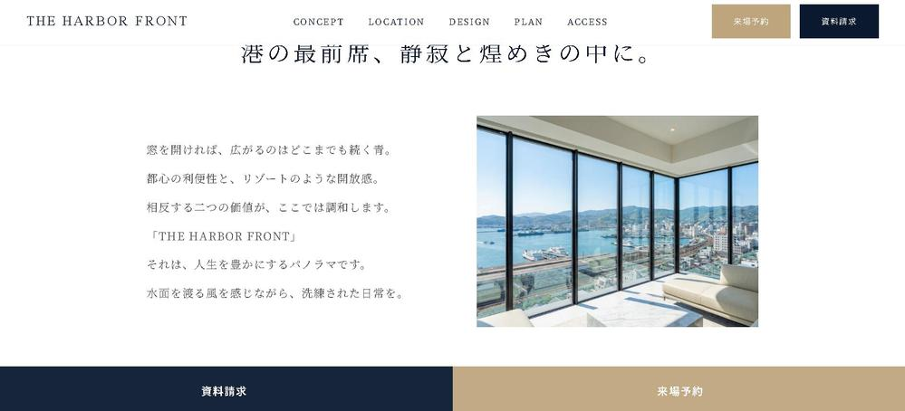
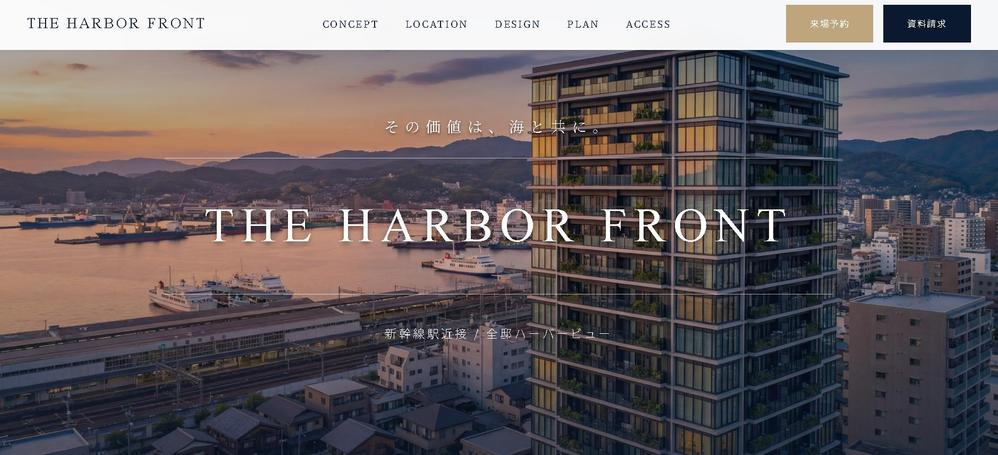

CASE STUDY / WEB DESIGN
マンションLP制作
「THE HARBOR FRONT」
高級マンションのランディングページ制作。世界観理解から行動へと自然につなぐ導線設計を軸に、
コンセプト設計・UI/UXデザイン・CTA導線までを一貫して担当しました。

DESIGN STRATEGY
世界観・設計コンセプト
01
共感と理解を深め、
自然な行動へと導く導線設計。
マンションLPの役割を単に情報を詰め込むのではなく、世界観理解から行動への橋渡しと定義。 「利便性＝自然と離れる」という定説を覆すべく、海景の開放感と駅近の利便性を同列に訴求しました。 ターゲットである働き盛り層・シニア層の双方に響くよう、装飾を削ぎ落とし、静かで上質な空気感を表現しています。
開放感 × 利便性
相反する価値をひとつの世界観に統合
理解と共感に特化したLP設計
「世界観理解 → 納得 → 行動」へと自然につなぐ導線を、コーポレートサイトとの役割分担を前提に設計

UI / UX DESIGN LOGIC
FV・ヘッダー設計
02
3つの価値を、
迷わせない一枚の視線導線で。
ヘッダーナビは中央配置を採用し、シンメトリーな美しさと余白を確保。 左にロゴ（認知）、中央にメニュー（理解）、右にCTA（行動）を配置し、視線が迷わず自然に流れる構成としています。 フォント演出やアニメーションは控えめに設計し、Web的な派手さを排除して静的な美しさを重視しました。

Navigation & Layout
中央配置による品格と安定感。左にロゴ、中央にメニュー、右にCTAを置き、迷いのない自然な視線誘導を設計。
Visual Selection
①海の眺望、②駅近の利便性、③邸宅としての存在感。3要素が直感的に伝わるビジュアルを厳選し、コピーに頼らず価値を伝達。
Tone & Manner
品位を守る「引き算」の演出。過度な動きによるWeb的なチープさを排除し、あえて静かな美しさを強調しました。
IMPLEMENTATION STRATEGY
CTA・導線・実装配慮
03
CV率だけを追わない。
ブランド体験を完結させる導線設計。
追従型CTAによる機会最大化
ヘッダー固定だけでなく、スクロール追従型のCTAを実装。ユーザーの検討が深まった瞬間に、ストレスなくアクションへ移行できる選択肢を常に提示しています。
外部フォームと世界観の融合
個人情報保護の観点から信頼性の高い外部フォーム（SSGform）を採用。LP本体とトンマナを統一し、画面遷移による違和感やブランド体験の分断を最小限に抑えています。
体験品質の維持
入力フォームへの遷移シーンにおいても、安易な装飾色を避け、ブランドカラーを基調とした視認性の高いデザインを採用。品格を保ちながら行動へつながる導線に落とし込んでいます。